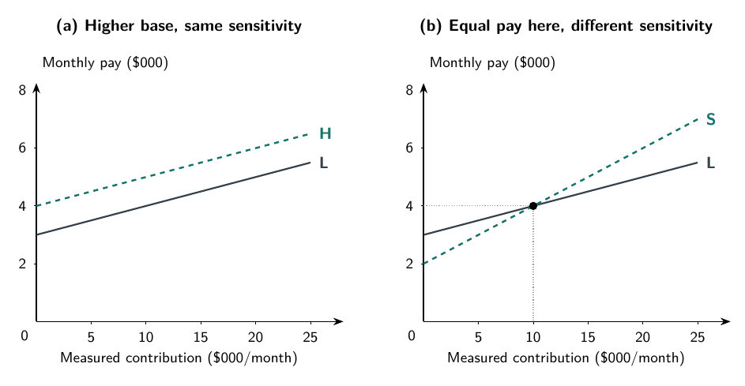

Which project would you sell?
Northbank Advisory helps clients with business projects. A salesperson has two opportunities, but the firm has capacity to deliver only one during the period. Project A would bring in $40,000 of revenue and require $34,000 of incremental delivery resources. Project B would bring in $30,000 and require $20,000.
Which project should the salesperson pursue?
Before considering sales compensation, A contributes $40,000 − $34,000 = $6,000. B contributes $30,000 − $20,000 = $10,000. The smaller sale leaves more for Northbank because it uses substantially fewer delivery resources.
Now suppose Northbank pays an 8% revenue commission. A earns the salesperson $3,200; B earns $2,400. The employee receives $800 more for choosing the project that contributes less to the firm.
There is no need to assume dishonesty or poor arithmetic. The reward tells the salesperson to value revenue, while Northbank’s business depends on what remains after relevant costs. Working harder to sell A could make the mismatch worse.
Northbank and its numbers are fictional. Assume both projects can be sold on the stated terms, with equal sales effort, capacity requirements, timing, and risk. Other consequences, including future relationships, are equal. The salesperson controls which opportunity to pursue. Delivery costs exclude the commission; any fixed salary and overhead are unchanged. These assumptions isolate project choice, not every aspect of sales work.
Chapter 6 asked what a performance measure tells us. Here we ask what happens when compensation depends on that measure. A useful reward must do more than create a strong reason to act. It must create a reason to act in a useful direction, at a cost the organization can justify.
Follow the payment through both sides
Under the revenue rule, Northbank retains $6,000 − $3,200 = $2,800 from A, compared with $10,000 − $2,400 = $7,600 from B. The firm’s preferred project and the salesperson’s preferred commission point in opposite directions.
Consider an alternative: pay 20% of contribution before commission. A now earns the salesperson $1,200, while B earns $2,000. Northbank retains $4,800 or $8,000 respectively. Both sides prefer B under the stated assumptions.
| Item | Project A | Project B |
|---|---|---|
| Revenue | $40,000 | $30,000 |
| Incremental delivery cost, excluding commission | $34,000 | $20,000 |
| Contribution before commission | $6,000 | $10,000 |
| Employee commission: 8% of revenue | $3,200 | $2,400 |
| Firm contribution after revenue commission | $2,800 | $7,600 |
| Employee commission: 20% of precommission contribution | $1,200 | $2,000 |
| Firm contribution after contribution commission | $4,800 | $8,000 |
On a small screen, scroll the table sideways to see all columns.
The two commission rules are alternatives, not two payments made together. Subtract the applicable commission once. Contribution after commission is not the firm’s total profit: the unchanged salary and overhead still have to be covered.
Paying a larger revenue percentage would not repair the ranking. At 12%, the salesperson still prefers the higher-revenue project. The reward basis matters separately from the rate applied to it. A stronger reward for the wrong target can intensify the conflict rather than correct it.
The contribution rule aligns this particular choice, but the table does not establish an optimal compensation package. Employee pay is lower under the new rule for either project. Northbank may need a different base salary or rate to attract and retain the employee. The comparison changes both the commission basis and its magnitude; it is not evidence that a particular percentage is universally better.
Nor is choosing B always the right answer. If its delivery cost rises enough, A can become more valuable. The purpose of contribution-based pay is to make the reward reflect the relevant comparison, not to teach the salesperson always to choose the smaller sale.
Higher pay and stronger incentives are different changes
Separate the level of compensation from its sensitivity to measured performance. The level tells us how much the employee receives at a given result. Sensitivity tells us how much additional pay follows from an improvement in the measured result.
Use a separate monthly illustration. Let measured contribution, before variable compensation, be the amount recorded for the employee’s work. Consider three hypothetical rules:
- L: $3,000 base pay plus 10% of measured contribution.
- H: $4,000 base pay plus 10% of measured contribution.
- S: $2,000 base pay plus 20% of measured contribution.
These are not extra payments added to Table 7.1. They are separate schedules for understanding pay design, not estimates of actual market wages. Restrict the illustration to nonnegative monthly contribution between $0 and $25,000.
H pays $1,000 more than L at every contribution level. But both pay another $100 when measured contribution increases by $1,000. The higher base changes pay without changing that immediate marginal reward. This does not mean base pay cannot affect retention, morale, or the value of keeping the job. It means those mechanisms differ from the explicit reward for one more measured dollar.
At $10,000 of measured contribution, L and S both pay $4,000. Their incentives at the margin nevertheless differ. Increasing contribution to $11,000 raises pay to $4,100 under L and $4,200 under S. Equal pay at one result does not mean equal sensitivity to the next result.

Figure 7.1. Raising pay and strengthening its link to performance are different changes.
In the figure, the horizontal axis measures recorded contribution, not effort. A steeper line gives a larger financial reward for raising the score. Whether it induces more useful effort depends on the employee’s available actions, their costs, and how well the score represents valuable work. We cannot read a productivity effect from the slope alone.
Will the employee accept the package?
An organization cannot evaluate a pay rule only by asking which action it encourages after the employee takes the job. It must also ask whether the employee will accept the arrangement in the first place.
The participation condition is that the overall job package is attractive enough relative to the employee’s feasible alternatives. Pay matters, but so do effort, hours, uncertainty, working conditions, and career opportunities. A contract that perfectly ranks projects but leaves the job unattractive has not solved Northbank’s staffing problem.
This explains why the lower commissions in the contribution plan are not a free gain. If Northbank increases base pay to make the package acceptable, that payment must enter the firm’s overall comparison. It need not change the ranking of A and B when it is the same whichever project is chosen, but it does change what the firm retains from employing the salesperson.
Compensation can also affect who applies or stays. Someone confident in their selling ability may view a commission differently from someone expecting a difficult territory or valuing stable income. An observed increase in sales after a pay change could reflect changed effort, different employees, different assignments, or market conditions. The calculation alone cannot distinguish these explanations. Chapter 8 examines selection and retention more fully.
The same expected pay can be a different offer
Now isolate uncertainty. Suppose two monthly pay arrangements involve exactly the same effort, productive contribution, and other job conditions. One pays $5,000 with certainty. The other pays $3,500 in one state and $6,500 in another, with each state equally likely. The states are hypothetical circumstances, not choices the employee can influence in this comparison.
| State | Probability | Fixed pay | Variable pay |
|---|---|---|---|
| Low | 0.50 | $5,000 | $3,500 |
| High | 0.50 | $5,000 | $6,500 |
On a small screen, scroll the table sideways to see all columns.
Expected pay is the probability-weighted average across possible outcomes. For the variable arrangement it is:
0.50 × $3,500 + 0.50 × $6,500 = $1,750 + $3,250 = $5,000.
The fixed arrangement also has expected pay of $5,000. But the variable arrangement never pays $5,000 in this two-state example. Its average is not a promise about any particular month.
A risk-averse employee prefers the certain $5,000 to the uncertain payment with the same expected value, holding the other conditions fixed. That preference is not a calculation error. A low-pay month may interfere with commitments in a way a high-pay month does not fully offset. Different workers need not place the same value on avoiding that uncertainty.
An employee may therefore require a higher expected payment to accept additional risk. The amount depends on preferences, resources, and other income sources; the table does not tell us what premium would be sufficient. We should not invent one by treating the difference between the possible payments as the employee’s cost of risk.
The experiment deliberately holds effort fixed. It shows a risk-bearing cost without showing an incentive benefit. In an actual performance-pay design, the potential benefit is that compensation changes choices in ways that improve productive contribution. Both sides of that comparison must be examined.
When is stronger performance pay useful?
The central tradeoff is between improving incentives and imposing costs of risk-bearing. Holmström’s Nobel lecture explains why a reward system should use information that helps distinguish an employee’s contribution from other influences on the outcome. Better information can improve incentives without simply making more pay depend on a noisy result. Holmström, 2016, §§I.A–II.B
Consider Northbank’s salesperson. A large commission offers little productive benefit if the employee has no useful way to affect sales. It may offer a substantial benefit if finding good clients requires costly effort that the supervisor cannot readily observe. The relevant question is not whether the employee likes money. It is which actions become worth taking when the reward changes.
Now suppose revenue falls because a major customer’s budget is cut. Making the employee absorb more of that loss may increase income risk without increasing any useful action. Conversely, if Northbank reimburses every shortfall as an unavoidable external event, employees may have little reason to search for alternatives. Distinguishing bad luck from a preventable loss requires information; declaring all disappointing results either “bad luck” or “poor effort” avoids the problem rather than solves it.
This is where Chapter 6’s performance comparisons can help. Results from similar territories might reveal a common demand shock. But the comparison must be informative: a mature territory and a newly opened one need not offer similar opportunities. Adjusting for every difference also takes time and invites disagreement about which differences deserve an adjustment.
Stronger performance pay is therefore more attractive when the employee has valuable actions available, those actions respond to the reward, and the measure captures their consequences reasonably well. Weakening the link can make sense when noise or omitted dimensions dominate. Neither “always pay for performance” nor “employees need stable salaries” is a complete rule.
A better commission basis is still an incomplete measure
The project table assumes delivery costs are known and correctly assigned. Outside that construction, contribution is itself a measurement problem.
Suppose Northbank’s salesperson promises extensive customization to secure a contract. Revenue is recorded when the agreement is signed, but the delivery team bears the extra work later. A contribution-based commission helps only if the relevant cost is attributed to that project. If the salesperson can shift it to a shared-support account, the reported margin may improve without improving the firm’s position.
Even correctly assigned current costs may leave out future consequences. A hurried sale can produce a dissatisfied client, repeat service work, or lost renewal business. Paying for current contribution alone can make those omissions expensive. The problem is not that contribution is useless. It is that the employee’s best-paid action can differ from the firm’s best action wherever important consequences escape the measure.
This is the multitasking issue introduced in Chapter 6: rewarding a measured activity can draw attention away from less measurable work. Holmström’s lecture discusses this result in the work he developed with Milgrom. Holmström, 2016, §IV
Northbank might respond with a smaller commission, review of unusual promises, consistent cost attribution, and a quality component. Each has a cost. Review consumes staff time. A quality score may be disputed. A smaller commission weakens the reward for useful sales effort as well as for gaming. Adding a measure is worthwhile only if the improved decision is worth the added complexity and opportunities for manipulation.
Salary, supervision, and profit-related pay
A fixed salary does not mean the absence of incentives. Employees may care about continued employment, professional reputation, promotion, colleagues, and the work itself. A salary simply makes current contractual pay less directly sensitive to the particular output measure under discussion.
Salary with supervision can be sensible when valuable conduct is easier to assess through ongoing observation than through a formula. A supervisor might review the promises made in difficult contracts instead of paying a commission on every reported sale. That approach depends on the supervisor having time, information, and incentives to judge fairly. Replacing a flawed number with unaccountable discretion is not automatically an improvement.
Supervision and performance pay can also work together. Reviewing a sample of contracts may make the contribution measure more trustworthy, allowing Northbank to use it in compensation with less distortion. In another setting, sufficiently effective supervision may reduce the need for a steep commission. Which relationship matters depends on what supervision actually changes.
Profit-related pay broadens the measure beyond an individual sale, but it introduces other difficulties. The salesperson may have little influence over firm-wide profit. A bonus pool shared among many employees may give each person only a small share of the gain from their extra effort. Broader measures can capture more of the organization’s consequences while weakening the link between an individual’s action and reward. Chapter 9 takes up that team problem.
Thresholds make the reward uneven
Return to a separate monthly illustration. Suppose Northbank pays a $1,000 bonus once measured contribution reaches at least $10,000. Other pay is fixed, and there is no additional threshold bonus above $10,000. Contribution here is measured before this bonus.
At $9,900, the bonus is zero. At $10,000, the bonus is $1,000. Over that narrow increase:
- Measured contribution rises by $100.
- Employee pay rises by $1,000.
- Contribution retained after the bonus falls from $9,900 to $9,000: a $900 decrease.
The last $100 has an unusually large private reward. Once the threshold is crossed, another $100 brings no additional threshold bonus. The same improvement in the score can therefore face a very different reward depending on the starting point.
An employee close to the target might spend heavily on obtaining one more sale, bring next month’s transaction forward, or dispute the timing of a recorded cost. These are possible responses, not predictions that every employee will manipulate the result. A threshold can also induce useful effort. Its effect depends on how close employees expect to be and which actions they can take.
The $900 decrease does not prove that the whole plan loses money. The bonus might have induced valuable work earlier in the month. We have calculated a local consequence while leaving that broader response unspecified. Still, a manager should notice the discontinuity before concluding that a simple target creates a simple incentive.
Time horizons: what changes after the sale?
Some consequences arrive after the initial performance report. A project may look successful at signing and disappoint during delivery. A compensation rule focused only on signing can encourage the employee to ignore problems that become visible later.
It matters whether later information changes the reward. Merely postponing the same irrevocable payment does not make it depend on future quality. By contrast, an arrangement specified in advance that uses later completion or quality information to determine part of the reward can change the salesperson’s initial choices. The distinction is between paying later and rewarding a later outcome.
Longer measurement periods have costs too. Employees wait longer, results can be affected by other teams, and it may be harder to identify which original decision caused a problem. If Northbank’s delivery team mishandles a sound contract, assigning the entire resulting loss to the salesperson can introduce risk without improving the salesperson’s choices. Reward timing must match the information and responsibility, not simply the calendar.
A discretionary assessment may capture valuable work that a formula misses, but employees must have reason to believe the organization will honor its reward promises. Baker, Gibbons, and Murphy analyze that credibility problem in subjective performance evaluation. Baker, Gibbons, and Murphy, 1993, abstract
For Northbank, a stated quality review is less useful if managers routinely change the criteria after the sale or use good performance as an excuse to raise the standard without compensation. The ratchet problem from Chapter 6 reappears. Consistent criteria, documented reasons, and a review process can help, but they also constrain managerial discretion. These are design considerations, not instructions for withholding pay already owed under an existing agreement.
Put compensation back into the organization
Northbank should not choose a commission percentage in isolation. Start with the decisions the salesperson controls. Specify what counts as project contribution, who records costs, who can approve unusual customer promises, and who reviews outcomes. Then ask how the proposed pay rule changes the employee’s preferred action.
The 20% contribution rule is a useful starting comparison because it corrects the ranking of A and B under our assumptions. Before adopting it, Northbank would still need to consider an acceptable overall pay package, measurement costs, uncertainty, and consequences outside the score. Giving the salesperson broad discretion over cost classifications while strongly rewarding reported margin could undermine the improvement immediately.
There is no separate compensation solution to every agency problem. Pay, decision rights, and evaluation form a system. A sensible recommendation identifies the choice it improves, the information it requires, and the remaining behavior it could encourage. That is more useful than naming a favored pay method and treating the name as a solution.
Study map
The chapter’s distinctions are worth keeping separate: pay level versus marginal sensitivity; expected pay versus the value of risky pay; recorded contribution versus organizational value; and delayed payment versus a reward that depends on later information. A compensation calculation should show both what the employee receives and what the firm retains. A recommendation should also explain participation, measurement, and the decisions within the employee’s control.
Practice and discussion
A larger commission. Change Northbank’s revenue commission from 8% to 12%, keeping the original project revenues and costs. Calculate employee pay and contribution retained by the firm for each project. Does the larger commission remove the ranking conflict? Explain why changing the rate is different from changing the reward basis.
A different delivery cost. Return to the 20% contribution commission. Change only Project B’s delivery cost to $26,000. Calculate its contribution before commission, employee reward, and retained contribution. Compare it with unchanged Project A. Why would a good rule allow the preferred project to change?
A different probability. In Table 7.2, change the low-state probability to 0.25 and the high-state probability to 0.75. Calculate expected variable pay. Does the answer establish that every risk-averse employee prefers this arrangement to $5,000 with certainty? What additional information would you need?
Same pay, different next dollar. Calculate pay under L and S at $10,000 and $11,000 of measured monthly contribution. At which result is pay equal? Which schedule rewards the $1,000 improvement more strongly? Explain why the calculation does not predict the employee’s effort or establish the better contract.
Repair the proposal. A manager proposes the $1,000 threshold bonus, paid three months later regardless of project quality, as a cure for rushed sales. Explain the incentive immediately below and above the threshold. Does the delay alone reward quality? Propose one specific change, identify the information and decision rights it needs, and name a new cost or distortion it could create.
Check your arithmetic
At a 12% revenue commission, A pays $4,800 and leaves $1,200; B pays $3,600 and leaves $6,400. The conflict remains. With B’s delivery cost at $26,000, its contribution before commission is $4,000, its 20% commission is $800, and it leaves $3,200; unchanged A pays $1,200 and leaves $4,800, so both rankings favor A.
With the revised probabilities, expected variable pay is 0.25 × $3,500 + 0.75 × $6,500 = $5,750. That average alone does not determine a risk-averse employee’s preference. L and S each pay $4,000 at $10,000 contribution; at $11,000 they pay $4,100 and $4,200. The gains are $100 and $200 respectively. The threshold comparison retains $9,900 before crossing and $9,000 at the target, not a $100 gain for the firm after the bonus.
Source note
Northbank, all dollar amounts, and Figure 7.1 are original teaching constructions, not evidence about a real firm’s compensation. The conceptual citations use selected passages from Bengt Holmström’s 2016 Nobel lecture, Pay for Performance and Beyond, and the abstract of George Baker, Robert Gibbons, and Kevin J. Murphy’s 1993 NBER working paper, Subjective Performance Measures in Optimal Incentive Contracts. They support bounded ideas about incentive design; no numerical effects or complete contract models are taken from them.